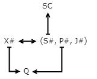
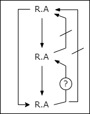
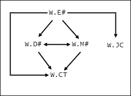
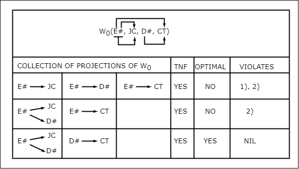

FURTHER NORMALIZATION OF THE DATA BASE RELATIONAL MODEL
FURTHER NORMALIZATION OF THE DATA BASE RELATIONAL MODEL
by
E. F. Codd IBM Research Laboratory San Jose, California
ABSTRACT:
In an earlier paper, the author proposed a relational model of data as a basis for protecting users of formatted data systems from the potentially disruptive changes in data representation caused by growth in the data base and changes in traffic. A first normal form for the time-varying collection of relations was introduced. In this paper, second and third normal forms are defined with the objective of making the collection of relations easier to understand and control, simpler to operate upon, and more informative to the casual user. The question “Can application programs be kept in a viable state when data base relations are restructured?” is discussed briefly and it is conjectured that third normal form will significantly extend the life expectancy of application programs.
RJ 909 (#18557) August 31, 1971 Information technology (IR, Documentation, etc.)
Introduction
1.1 Objectives of Normalization
In an earlier paper [1] the author proposed a relational model of data as a basis for protecting users of formatted data systems from the potentially disruptive changes in data representation caused by growth in the variety of data types in the data base and by statistical changes in the transaction or request traffic. Using this model, both the application programmer and the interactive user view the data base as a time-varying collection of normalized relations of assorted degrees. Definitions of these terms and of the basic relational operations of projection and natural join are given in the Appendix.
The possibility of further normalization of the data base relational model was mentioned in [1]. The objectives of this further normalization are:
- To free the collection of relations from undesirable insertion, update and deletion dependencies;
- To reduce the need for restructuring the collection of relations as new types of data are introduced, and thus increase the life span of application programs;
- To make the relational model more informative to users;
- To make the collection of relations neutral to the query statistics, where these statistics are liable to change as time goes by.
The rules or conventions upon which the second and third normal forms are based can be interpreted as guidelines for the data base designer. They are also of concern in the design of general purpose, relational data base systems.
1.2 Functional Dependence
When setting up a relational data base, the data base designer is confronted with many possibilities in selecting the relational schema itself, let alone the selection of its representation in storage. An important, in fact fundamental, consideration is that of identifying which attributes are functionally dependent on others. Attribute B of relation R is functionally dependent on attribute A of R if, at every instant of time, each value in A has no more than one value in B associated with it under R. In other words, the projection ΠA,B(R) is at every instant of time a function from ΠA(R) to ΠB(R) (this function can be, and usually will be, time-varying). We write R.A → R.B if B is functionally dependent on A in R, and R.A ↛ R.B if B is not functionally dependent on A in R. If both R.A → R.B and R.B → R.A hold, then at all times R.A and R.B are in one-to-one correspondence, and we write R.A ↔ R.B.
The definition given above can be extended to collections of attributes. Thus, if D, E are distinct collections of attributes of R, E is functionally dependent on D if, at every instant of time, each D-value has no more than one E-value associated with it under R. The notation →, ↛ introduced for individual attributes is applied similarly to collections of attributes. A functional dependence of the form R.D → R.E where E is a subset of D will be called a trivial dependence.
As an example to illustrate functional dependence (both trivial and non-trivial), consider the relation
U(E#, D#, V#)
where E# = employee serial number D# = serial number of department to which employee belongs V# = serial number of division to which employee belongs.
Suppose that an employee never belongs to more than one department, that a department never belongs to more than one division, and an employee belongs to the division to which his department belongs. Then, we observe that
U.E# → U.D# (1)
U.D# → U.V# (2)
U.E# → U.V# (3)
U.(E#, D#) → U.V# (4)
where (4) is a consequence of (3) (3) is a consequence of (1) and (2) together.
Suppose we are also given the following additional facts: normally, there are many employees belonging to a given department and many departments belonging to a given division. Then, we may observe that
U.D# ↛ U.E#
and
U.V# ↛ U.D# .
An example of a trivial dependence is:
U.(E#, D#) → U.E#
since E# is included in (E#, D#).
1.3 Candidate Keys
Each candidate key K of relation R is, by definition, a combination of attributes (possibly a single attribute) of R with properties P1 and P2:
P1: (Unique Identification) In each tuple of R the value of K uniquely identifies that tuple; i.e., R.K → R.Ω where Ω denotes the collection of all attributes of the specified relation;
P2: (Non-redundancy) No attribute in K can be discarded without destroying property P1.
Obviously, there always exists at least one candidate key, because the combination of all attributes of R possesses property P1. It is then a matter of looking for a subset with property P2.
Two properties of candidate keys can be deduced from P1 and P2:
P3: Each attribute of R is functionally dependent on each candidate key of R;
P4: The collection of attributes of R in a candidate key K is a maximal functionally independent set (i.e., every proper subset of the attributes of K is functionally independent of every other proper subset of attributes of K, and no other attributes of R can be added without destroying this functional independence).
It is left to the reader to show that
- P1 is logically equivalent to P3
- P1 ∧ P2 implies P4
- a maximal functionally independent set of attributes is not necessarily a candidate key.
For each relation R in a data base, one of its candidate keys is arbitrarily designated as the primary key of R. The usual operational distinction between the primary key and other candidate keys (if any) is that no tuple is allowed to have an undefined value for any of the primary key components, whereas any other components may have an undefined value. This restriction is imposed because of the vital role played by primary keys in search algorithms. The statement “B functionally depends on A in R” may be expressed in the alternative form “A identifies B in R”, since in this case A satisfies condition P1 for the relation ΠA,B(R).
2. The Second Normal Form
2.1 Introductory Example
The basic ideas underlying the second and third normal forms are simple, but they have many subtle ramifications. The author has found that numerous examples are needed to explain and motivate the precise definitions of these normal forms. Accordingly, we begin with the simplest case of a relation in first normal form but not in second (i.e., a relation of degree 3):
T(S#, P#, SC)
where
S# = supplier number
P# = part number
SC = supplier city.
A triple (x, y, z) belongs to T if the supplier with serial number x supplies the part with serial number y, and supplier x has his base of operations in city z. A given part may be supplied by many suppliers, and a given supplier may supply many parts. Thus, the following time-independent conditions hold:
T.S# ↛ T.P#
T.P# ↛ T.S#
In other words, although the attributes S#, P# are related under T, they are functionally independent of one another under T. Now, each supplier has (in this example) only one base of operations and therefore only one city. Thus,
T.S# → T.SC .
Intuitively, we can see that the only choice for the primary key of T is the attribute combination (S#, P#).
Looking at a sample instantaneous tabulation of T (Fig. 1) the undesirable properties of the T schema become immediately apparent. We observe for example that, if supplier u relocates his base of operations from Poole to Tolpuddle, more than one tuple has to be updated. Worse still, the number of tuples to be updated can, and usually will, change with time. It just happens to be 3 tuples at this instant.
T(S#, P#, SC)
u 1 'POOLE'
u 2 'POOLE'
u 3 'POOLE'
v 1 'FEISTRITZ'
v 3 'FEISTRITZ'
Fig. 1: A Relation not in Second Normal Form
Now suppose supplier v ceases to supply parts 1 and 3, but may in the near future supply some other parts. Accordingly, we wish to retain the information that supplier v is located in Feistritz. Deletion of one of the two tuples does not cause the complete disappearance of the association of v with Feistritz, but deletion of both tuples does. This is an example of a deletion dependency which is a consequence of the relational schema itself. It is left to the reader to illustrate a corresponding insertion dependency using this example.
Conversion of T to second normal form consists of replacing T by two of its projections:
T1 = ΠS#,P#(T) T2 = ΠS#,SC(T)
We thus obtain the relations tabulated in Fig. 2.
| T1(S#, P#) | T2(S#, SC) |
|---|---|
| u 1 | u ‘POOLE’ |
| u 2 | v ‘FEISTRITZ’ |
| u 3 | |
| v 1 | |
| v 3 |
Fig. 2: Relations in Second Normal Form
Note how the undesirable insertion, update and deletion dependencies have disappeared. No essential information has been lost, since at any time the original relation T may be recovered by taking the natural join of T1 and T2 on S#.
2.2 More Probing Examples
Unfortunately, the simple example above does not illustrate all of the complexities which can arise. For expository purposes we now consider five possible relations in a data base concerning suppliers, parts, and projects. In a crude sense these relations represent five alternative possibilities - it is not intended that they coexist in a single data base. Note, however, that some contain more information (in the form of additional attributes) than others. In each case the primary key is underlined.
R1(S#, P#, J#) R2(X#, S#, P#, J#) R3(X#, S#, P#, J#, Q) R4(X#, S#, P#, J#, Q, SC) R5(S#, P#, J#, Q, SC)
where S# = supplier number P# = part number J# = project number X# = serial number Q = quantity supplied SC = supplier city
A triple (x, y, z) belongs to R1 if supplier x supplies part y to project z. The same interpretation holds for ΠS#, P#, J#(Ri) for i = 2, 3, 4, 5. In each of the five relations, a given combination of supplier and part may be associated with more than one project, a given combination of part and project may be associated with more than one supplier, and a given combination of project and supplier may be associated with more than one part. Thus, for all i
Ri.(S#, P#) ↛ Ri.(J#) Ri.(P#, J#) ↛ Ri.(S#) Ri.(J#, S#) ↛ Ri.(P#)
In each of the relations that have the attribute Q, there is only one value of Q for a given value of the attribute combination (S#, P#, J#). Thus,
Ri.(S#, P#, J#) → Ri.Q for i = 3, 4, 5.
However, the value of Q is not uniquely determined by any proper subset of these attributes. Thus, for i = 3, 4, 5
Ri.(S#, P#) ↛ Ri.Q Ri.(P#, J#) ↛ Ri.Q Ri.(J#, S#) ↛ Ri.Q .
In each of the relations that have the attribute SC, there is only one value of SC for a given value of S#. Thus, for i = 4, 5
Ri.S# → Ri.SC .
In three of the relations a serial number key X# has been introduced and selected as the primary key, even though there is already an attribute combination (S#, P#, J#) capable of acting as the primary key. Thus, for i = 2, 3, 4
Ri.X# → Ri.(S#, P#, J#) .
This is not at all unusual in practice (consider a purchase order number, for instance).
In what follows, we shall suppose that in the given relations there are no functional dependencies other than those itemized above together with those that can be formally deduced from them. Fig. 3 summarizes the non-trivial dependencies (but not the non-dependencies) in a parent relation R from which R1, R2, R3, R4, R5 can be derived by projection.

In all five sample relations above, (S#, P#, J#) is a candidate key. In R1 and R5 it is the primary key also. X# is both a candidate key and the primary key in relations R2, R3, R4.
2.3 Prime Attributes
We have observed that in a given relation there may be several distinct candidate keys* and, in this case, one is arbitrarily designated as the primary key. Let us call any attribute of R which participates in at least one candidate key of R a prime attribute of R. All other attributes of R are called non-prime. In sample relations R1, R2 all attributes are prime. In R3 the only non-prime attribute is Q, while in R4, R5 both Q and SC are non-prime.
2.4 Full Functional Dependence
Suppose D, E are two distinct subcollections of the attributes of a relation R and
R.D → R.E
- Although distinct, they need not be disjoint.
If, in addition, E is not functionally dependent on any subset of D (other than D itself) then E is said to be fully dependent on D in R. Intuitively, E is functionally dependent on the whole of D, but not on any part of it. An example of full dependence is:
R3.(S#, P#, J#) → R3.Q .
2.5 Definition of Second Normal Form
A relation R is in second normal form if it is in first normal form and every non-prime attribute of R is fully dependent on each candidate key of R.* This definition rules out both kinds of undesirable dependence of the attribute SC:
- The obvious functional dependence of SC in R5 on a portion S# of the primary key;
- The less obvious functional dependence of SC in R4 on a portion S# of a candidate key that is not the primary key.
Thus, R4 and R5 are not in second normal form.
Two special cases of the definition are worth noting. Suppose R is in first normal form and one or both of the following conditions hold:
C1: R has no non-prime attribute;
C2: Every candidate key of R consists of just a single attribute.
* Although each prime attribute is fully dependent on each candidate key of which it is a component, it is possible for a prime attribute to be non-fully dependent on a candidate key of which it is not a component. Thus, this definition is changed in meaning if the term “non-prime” is dropped. An example which illustrates this distinction is R(A, B, C, D, E, F) where
R.(A,B,C) ↔ R.(D, E) → R.F
R.(A,B) → R.D
R.E ↛ R.C
Prime attribute C is not fully dependent on candidate key (D, E); neither is D on (A, B, C).
Then, without further investigation, we can say that R is in second normal form. Observe that both R1 and R2 are in second normal form, because special case C1 applies. Relation R3 is an example of a relation in second normal form, but not as a result of the special conditions C1, C2 above.
2.6 Optimal Second Normal Form
In section 2.1 a simple example of conversion from first to second normal form was discussed. The operation of projection, employed twice in that example, is adequate for the general case. However, to keep the user from being confused by unnecessary relation names (and to keep the system catalog from getting clogged by such names), projection should be applied sparingly when normalizing.
Consider the relation T(S#, P#, SN, SC) where
S# → SN (supplier name)
S# → SC (supplier city).
If we apply projection sparingly in converting to second normal form, we obtain collection C1 say:
ΠS#, P#(T), ΠS#, SN, SC(T).
On the other hand, we could apply projection liberally and obtain collection C2 say:
ΠS#, P#(T), ΠS#, SN(T), ΠS#, SC(T),
Both C1 and C2 are in second normal form and both retain all the essential information in the original relation T. However, collection C1 contains the fewest possible relations, and is accordingly said to be in optimal second normal form. C2 is in non-optimal second normal form.
3. Third Normal Form
3.1 Transitive Dependence
Suppose that A, B, C are three distinct collections of attributes of a relation R (hence R is of degree 3 or more). Suppose that all three of the following time-independent conditions hold:
R.A → R.B, R.B ↛ R.A,
R.B → R.C .
From this we may conclude that two other conditions must hold:
R.A → R.C, R.C ↛ R.A
and we may represent the entire set of conditions on A, B, C as shown in Fig. 4. Note that R.C → R.B is neither prohibited nor required.

Fig. 4: Transitive Dependence of C on A under R
In such a case we say that C is transitively dependent on A under R. In the special case where R.C → R.B also, both B and C are transitively dependent on A under R.
To illustrate transitive dependence, consider a relation W concerning employees and their departments:
W(E#, JC, D#, M#, CT)
where
E# = employee serial number
JC = employee jobcode
D# = department number of employee
M# = serial number of department manager
CT = contract type (government or non-government)
Suppose that each employee is given only one jobcode and is assigned to only one department. Each department has its own manager and is involved in work on either government or non-government contracts, not both. The non-trivial functional dependencies in W are as shown in Fig. 5 (the non-dependencies are implied).

Fig. 5: Example of Several Transitive Dependencies
If M# were not present, the only transitive dependence would be that of CT on E#. With M# present, there are two additional transitive dependencies: both D# and M# are transitively dependent on E#. Note, however, that CT is not transitively dependent on either D# or M#.
Looking at a sample instantaneous tabulation of W (Fig. 6) the undesirable properties of the W schema become immediately apparent. We observe for example that, if the manager of department y should change, more than one tuple has to be updated. The actual number of tuples to be updated can, and usually will, change with time. A similar remark applies if department x is switched from government work (contract type g) to non-government work (contract type n).
W(E#, JC, D#, M#, CT)
1 a x 11 g
2 c x 11 g
3 a y 12 n
4 b x 11 g
5 b y 12 n
6 c y 12 n
7 a z 13 n
8 c z 13 n
Fig. 6: A Relation not in Third Normal Form
Deletion of the tuple for an employee has two possible consequences: deletion of the corresponding department information if his tuple is the sole one remaining just prior to deletion, and non-deletion of the department information otherwise. If the data base system does not permit any primary key to have an undefined value, then D# and CT information for a new department cannot be established in relation W before people are assigned to that department. If, on the other hand, the primary key E# could have an undefined value, and if a tuple were introduced with such a value for E# together with defined values for D# (a new department) and CT, then insertion of E# and JC values for the first employee in that department involves no new tuple, whereas each subsequent assignment of an employee to that department does require a new tuple to be inserted.
Conversion of W to third normal form consists of replacing W by two of its projections:
W1 = ΠE#, JC, D#(W)
W2 = ΠD#, M#, CT(W).
We thus obtain the relations tabulated in Fig. 7.
W1(E#, JC, D#) W2(D#, M#, CT)
1 a x x 11 g
2 c x y 12 n
3 a y z 13 n
4 b x
5 b y
6 c y
7 a z
8 c z
Fig. 7: Relations in Third Normal Form
Note how the undesirable insertion, update and deletion dependencies have disappeared with the removal of the transitive dependencies. No essential information has been lost, since at any time the original relation W may be recovered by taking the natural join of W1 and W2 on D#.
3.2 Nonremovable Transitive Dependence
It is not always possible to remove all transitive dependencies without losing information. This is illustrated by a relation R(A, B, C) in which
R.(A,B) → R.C , R.C ↛ R.(A, B)
R.C → R.B .
Thus, B is transitively dependent on the primary key (A, B).
3.3 Definition of Third Normal Form
A relation R is in third normal form if it is in second normal form and every non-prime attribute of R is non-transitively dependent on each
candidate key of R. Relations T1, T2, R1, R2, R3 of section 2.1 are in third normal form. Relations R4, R5 are not in third normal form, because they are not even in second. Relation U of section 1.2 is in second normal form, but not in third, because of the transitive dependence of V# on E#.
Any relation R in third normal form has the following property:
P5: Every non-prime attribute of R is both fully dependent and non-transitively dependent on each candidate key of R.
This property is an immediate consequence of the definition given above. Note that the definition has been so formulated that it does not prohibit transitive dependence of the kind illustrated in section 3.2.
3.4 Optimal Third Normal Form
Suppose C2 is a collection of relations in optimal second normal form and projection is applied to convert to third normal form. The resulting collection of relations C3 is in optimal third normal form relative to C2 if both of the following conditions hold:
- C3 must contain the fewest possible relations (as in the case of the optimal second normal form) each in third normal form;
- Each relation in C3 must not have any pair of attributes such that one member of the pair is strictly transitively dependent* on the other in some relation of C2 (this condition forces attributes which are “remotely related” to be separated from one another in the normalized collection of relations).
*Attribute C is strictly transitively dependent on attribute A under R if there is an attribute B such that
R.A → R.B , R.B ↛ R.A
R.B → R.C , R.C ↛ R.B
This is a special case of transitive dependence (see definition in section 3.1)
Application of these conditions is illustrated in Fig. 8a, 8b using the relation W of section 3.1. Fig. 8a treats the normalization of W0 (obtained from W by dropping manager number M#). Fig. 8b treats the normalization of W itself, and shows how one-to-one correspondences are forced to occur between candidate keys of the projections (instead of between non-prime attributes). Note also the non-uniqueness of the optimal third normal form in Fig. 8b.
4. Admissible States
When converting a time-varying data base from first normal form to second, or from second to third, certain new insertion and deletion possibilities are introduced. Let us look at the example in section 2.1 again.
In first normal form the data base B1 consists of the single time-varying relation denoted by the schema
T(S#, P#, SC).
In second normal form the corresponding data base B2 consists of two relations denoted by the schema
T1(S#, P#) T2(S#, SC)
where, for all time
- T1 = ΠS#, P#(T)
- T2 = ΠS#, SC(T).
As usual, the primary keys are underlined.

Fig. 8a: Conversion of W0 to Third Normal Form
TODO: CONTINUE HERE
| W(E#, JC, D#, M#, CT) |
|---|
COLLECTION OF PROJECTIONS OF W
| E# → JC | E# → CT | E# → D# | D# → CT | M# → CT | TNF | OPTIMAL | COMMENTS |
|---|---|---|---|---|---|---|---|
| E# → JC | E# → CT | NO | D# and M# are transitively dependent on E# | ||||
| E# → JC | E# → D# | D# → CT | M# → CT | YES | NO | VIOLATES 1) | |
| E# → JC | D# → CT | M# → CT | YES | YES | VIOLATES NIL | ||
| E# → JC | D# → CT | M# → CT | YES | YES | VIOLATES NIL |
Fig. 8b: Conversion of W to Third Normal Form
A data base state (i.e., instantaneous snapshot) is admissible relative to a given schema if
- each relation named in the schema has tuples whose components belong to the specified domains;
- all tuples of a relation named in the schema are distinct;
- no tuple has an undefined value for its primary key (and thus no component of the primary key may have an undefined value).
The last condition makes an operational distinction between that candidate key selected to act as the primary key of a relation and all other candidate keys of that relation.
Given any admissible state for B1 we can produce a corresponding admissible state for B2 by applying the operation of projection as in the example above. The original B1 state can be recovered by taking the natural join (see Appendix for definition) of R1 and R2 on S#.
We now observe that the schema for B2 has more admissible states than that for B1. Thus, in B2 it is perfectly admissible to have a S# value appearing in T2 which does not appear at all in T1, or vice versa, as in the B2-state exhibited in Fig. 9.
| T1(S#, P#) | T2(S#, SC) |
|---|---|
| u 1 | u ‘POOLE’ |
| u 2 | v ‘FEISTRITZ’ |
| v 1 | w ‘SWANAGE’ |
| z 3 |
Fig. 9: An Admissible State for B2
If we now take the natural join of R1 and R2 on S#, we obtain the state (or tabulation) of T exhibited in Fig. 10. Although this state is admissible for B1, essential information has been lost.
| T(S#, P#, SC) |
|---|
| u 1 ‘POOLE’ |
| u 2 ‘POOLE’ |
| v 1 ‘FEISTRITZ’ |
Fig. 10: The Natural Join of Relations in Fig. 9
An obvious property of the class of admissible states for a given data base schema is that by means of the operations of tuple insertion and tuple deletion all the admissible states are reachable from any given admissible state. Clearly, the schema for B2 permits insertions and deletions not permitted by the schema for B1. It is accordingly reasonable to say that these schemata are not insertion-deletion equivalent.
5. Query Equivalence
A useful notion of query equivalence of data base states can be based on the algebraic view of queries. In this view retrieval of data is treated as the formation of a new relation from the data base relations by some operation of a relational algebra (see [2]).
If Θ is a relational algebra, B is a collection of relations and R is a relation which is derivable from B using operations of the algebra Θ only, then we say (as in [1]) that R is Θ-derivable from B. Suppose now that we have two data bases A, B which at time t are in states At, Bt respectively. We say that the data base states At, Bt are query-equivalent
providing they are each Θ-derivable from the other and Θ is a relationally complete algebra (see [2]). The reasonableness of this definition stems from the fact that, if each of the data base states At, Bt is Θ-derivable from the other, then any relation R which is Θ-derivable from one must be Θ-derivable from the other.
Fig. 11 summarizes the observations made in section 4 on admissible states. It also illustrates the fact that the set S of all admissible states for a data base cast in first normal form is query-equivalent to a subset T1 of all admissible states when this data base is cast in second normal form. Similarly, the set T1 ∪ T2 of all admissible states for this data base cast in second normal form is query-equivalent to a subset U1 of all admissible states when the same data base is cast in third normal form.
6. Growth and Restructuring
One of the principal reasons for making application programs interact with an abstract collection of relations instead of their storage representations is to keep these programs from being logically impaired when the storage representations change. Now we wish to consider (but only briefly) what happens to the application programs when the collection of relations is itself changed to conform to a new schema. Simple additions of new data base domains and new relations have no effect. Outright removal of a relation R obviously cripples those programs that previously made use of R. Replacement of a relation by one of its projections will cripple those programs that previously made use of the attributes now dropped.
The really interesting type of change is replacement of a relation R by two or more of its projections such that R may be recovered by taking the natural join of these projections. We discussed this type of change in sections 2 and 3 in the context of conversion to second and third normal forms respectively. In the present context of data base growth we call this phenomenon attribute migration.
Some of the reasons why attribute migration may accompany data base growth are as follows:
- Through continued acquisition of additional attributes a relation has become too cumbersome in size and fuzzy in meaning;
- New controls (e.g., ownership of data, access authorization, recovery, etc.) are being introduced;
- There has been a change in that part of the real world which the data base reflects or models.
To illustrate the effect of attribute migration on application programs, consider the splitting of data base relation U(E#, JC, D#, M#, CT) into the two projections:
U1 = ΠE#, JC, D#(U) U2 = ΠD#, M#, CT(U)
(see section 3.1 for the interpretation of U and its attributes).
We first examine a query and then an insertion. Each is expressed in the data base sublanguage ALPHA [3].
** Find the contract type (CT) for the employee whose serial number (E#)
is 1588. Place result in workspace W.
GET W U.CT:(U.E# = 1588)
When U is replaced by the two projections U1, U2, queries on U must undergo a transformation to make them work as before. If the data base system were supplied with a suitable set of substitutions it could make this transformation automatically. We do not propose to go into the details here, but merely state that the resulting transformed query would be:
GET W U2.CT: 3U1((U1.D# = U2.D#) ∧ (U1.E# = 1588))
The real difficulty arises with insertion and deletion.
** Insert from workspace W into the data base relation U a tuple for a new employee with serial number 1492 and contract type non-government (n). Values for his jobcode, department number, and manager number are not yet available.
PUT W U
When data base relation U is replaced by U1, U2 and we attempt to transform this insertion to make it work on these projections, we find that the insertion of two new tuples is necessary: one into U1, and one into U2. The insertion into U1 presents no problem, because we have a value (1492) for its primary key component (E#). In the case of U2, however, we do not have a value for its primary key component (D#). To cope with this difficulty, the system could temporarily insert a fictitious (but defined) value to represent a department (as yet undetermined) which is assigned to non-government work. Unfortunately, when the total data base is considered together with all the possible partially defined associations which may have to be temporarily remembered, the system may require a very large pool of fictitious values to call upon.
We have seen that attribute migration can logically impair an application program. Further, it may be feasible to systematically re-interpret the data base requests made by a program P so as to make P work correctly again. This problem is simpler for those programs that avoid insertion and deletion on the relations affected by attribute migration. Whether or not this special case holds, the re-interpretation is likely to cause significant system overhead. Avoidance of attribute migration is accordingly desirable. It is this author’s thesis that, by casting the data base in third normal form at the earliest possible time and by keeping it that way an installation will reduce the incidence of attribute migration to a minimum, and consequently have less trouble keeping its application programs in a viable state.
7. Conclusion
In section 1 we introduced the notion of functional dependence within a relation - a notion that is fundamental in formatted data base design. Using this notion, two new normal forms were defined. Fig. 12 summarizes the relationship between the three normal forms introduced by this author. Notice that as a collection of relations is translated from first normal form to second, and then to third, the conditions applied are progressively more stringent.
In the past, design of records (computerized or not) for commercial, industrial and government institutions has been oriented in an ad hoc way to the needs of particular applications. For the large integrated data bases of the future, application-independent guidelines for logical
We have seen that attribute migration can logically impair an application program. Further, it may be feasible to systematically re-interpret the data base requests made by a program P so as to make P work correctly again. This problem is simpler for those programs that avoid insertion and deletion on the relations affected by attribute migration. Whether or not this special case holds, the re-interpretation is likely to cause significant system overhead. Avoidance of attribute migration is accordingly desirable. It is this author’s thesis that, by casting the data base in third normal form at the earliest possible time and by keeping it that way an installation will reduce the incidence of attribute migration to a minimum, and consequently have less trouble keeping its application programs in a viable state.
7. Conclusion
In section 1 we introduced the notion of functional dependence within a relation - a notion that is fundamental in formatted data base design. Using this notion, two new normal forms were defined. Fig. 12 summarizes the relationship between the three normal forms introduced by this author. Notice that as a collection of relations is translated from first normal form to second, and then to third, the conditions applied are progressively more stringent.
In the past, design of records (computerized or not) for commercial, industrial and government institutions has been oriented in an ad hoc way to the needs of particular applications. For the large integrated data bases of the future, application-independent guidelines for logical
record design are sorely needed. This paper is intended to provide such guidelines.
It is also conjectured that physical records in optimal third normal form will prove to be highly economical in space consumed. In some cases a further saving in space can be obtained by factoring (see [2]) relations in third normal form.
Although the three normal forms are query equivalent in the sense that the set of queries answerable by a collection C in first normal form is transformable into queries yielding the same information from the second and third normal forms of C, there is a difference in information content of the three forms. The second is more informative than the first, and the third is more informative than the second. The increased information lies in the data description (rather than in the data described) as a consequence of the underlying conventions. Like the declarations of redundancies and combinational possibilities within the relational model (see [1]), the normal forms described above tend to capture some aspects of the semantics (minor, of course). Thus, a relational model in second normal form, and more especially, one in third normal form is likely to be more readily understood by people who are not everyday users of the data. It is also likely to be better tuned to the authorization requirements of installations.
Compared with first normal form, the second and third do carry with them the penalty of extra names. In the many data bases that have relations of high degree, this name penalty will not be nearly as severe as that
associated with a complete conversion to nested binary relations.
Some queries will also need to employ more join terms for cross-referencing between relations than might otherwise be the case. This potential burden on the user can be eased by user-declared (and possibly pooled) cross-referencing for heavily used types of queries.
8. Acknowledgments
The author is indebted to Claude Delobel of the Conservatoire National des Arts et Metiers, Paris for indicating an inadequacy in the treatment of one-to-one correspondences in an early draft of this paper. Working from this draft, C. J. Date, I. J. Heath and P. Hopewell of the IBM Development Laboratory in Hursley, England have developed some theoretical and practical applications of the third normal form, which will be published soon [4,5]. Their interest in and enthusiasm for the third normal form encouraged the author to produce a more detailed paper than the original version. Thanks are also due to F. P. Palermo and J. J. Rissanen of IBM Research, San Jose for suggesting changes which improved the clarity.
References
- E. F. Codd, “A Relational Model of Data for Large Shared Data Banks”, Comm. ACM 13 6, June 1970, 377-387.
- E. F. Codd, “Relational Completeness of Data Base Sublanguages”, Courant Computer Science Symposia 6 “Data Base Systems”, New York City, May 24-25, 1971, to be published by Prentice-Hall.
- E. F. Codd, “A Data Base Sublanguage founded on the Relational Calculus”, IBM Research Report RJ893, San Jose, California, July 26, 1971.
- I. J. Heath, “Unacceptable File Operations in a Relational Data Base”, Proc. 1971 ACM-SIGFIDET Workshop on Data Description, Access and Control, to be available from ACM HQ, 1972.
- C. J. Date, P. Hopewell, “File Definition and Logical Data Independence”, Proc. 1971 ACM-SIGFIDET Workshop on Data Description, Access and Control, to be available from ACM HQ, 1972.
APPENDIX
A1. Basic Definitions
Given sets (D_1, D_2, \ldots, D_n) (not necessarily distinct), R is a relation on these n sets if it is a set of elements of the form ((d_1, d_2, \ldots, d_n)) where (d_j \in D_j) for each (j = 1, 2, \ldots, n). More concisely, R is a subset of the Cartesian product (D_1 \times D_2 \times \ldots \times D_n). We refer to (D_j) as the jth domain of R. The elements of a relation of degree n are called n-tuples or tuples. A relation is in first normal form if it has the property that none of its domains has elements which are themselves sets. An unnormalized relation is one which is not in first normal form.
A data base B is a finite collection of time-varying relations defined on a finite collection of domains, say (D_1, D_2, \ldots, D_p). Suppose relation R is one of the relations in B, and is of degree n. To declare R to a data base system we need to cite n of the p data base domains as those on which R is defined.
Now, not all these n cited domains need be distinct. Instead of using an ordering to distinguish these n citations from one another (as is common in mathematics), we shall use a distinct name for each citation and call this the attribute name for that particular use of a data base domain. Each distinct use (or citation) of a data base domain in defining R is accordingly called an attribute of R. For example, a relation R of degree 3 might have attributes ((A_1, A_2, A_3)) while the corresponding data base domains are ((D_5, D_7, D_5)). Attribute names provide an effective means of protecting the user from having to know domain positions.
A2. Projection
Suppose ( r ) is a tuple of relation ( R ) and ( A ) is an attribute of ( R ). We adopt the notation ( r.A ) to designate the ( A )-component of ( r ). Now suppose ( A ) is instead a list ((A_1, A_2, \ldots, A_k)) of attributes of ( R ). We extend the notation ( r.A ) so that, in this case:
[ r.A = (r.A_1, r.A_2, \ldots, r.A_k) ]
When the list ( A ) is empty, ( r.A = r ).
Let ( C = (C_1, C_2, \ldots, C_n) ) be a list of all the attributes of ( R ). Let ( A ) be a sublist (length ( k )) of ( C ) and ( r ) a tuple of ( R ). Then, we adopt the notation ( r.\bar{A} ) to designate the ((n-k))-tuple ( r.B ) where ( B ) is the complementary list of attributes obtained by deleting from ( C ) those listed in ( A ).
The projection of ( R ) on the attribute list ( A ) is defined by
[ \Pi_A(R) = { r.A: r \in R } ]
A more informal definition is given in [1].
A3. Natural Join
Suppose ( R, S ) are two relations and ( A = (A_1, \ldots, A_k) ), ( B = (B_1, \ldots, B_k) ) are equal-length lists of the attributes of ( R, S ) respectively. Suppose that for ( i = 1, 2, \ldots, k ) attributes ( A_i, B_i ) are comparable: that is, for every ( r \in R ), ( s \in S ):
[ r.A_i = s.B_i ]
is either true or false (not undefined). We say that
[ r.A = s.B ]
if ((r.A_1 = s.B_1) \land \ldots \land (r.A_k = s.B_k) ).
Then, the natural join of ( R ) on ( A ) with ( S ) on ( B ) is defined by:
[ R * S = {(r, s.B): r \in R \land s \in S \land (r.A = s.B) } ]
This definition is the same as that given in [1] except that there is no requirement that
[ \Pi_A(R) = \Pi_B(S) ]
for relations ( R, S ) to be joinable. This condition was imposed in [1] solely for the purposes of treating redundancy and consistency.
A4. Notation for Functional Dependence
We have deliberately employed the redundant notation ( R.A \rightarrow R.B ) (instead of ( A \xrightarrow{R} B ), for example), because the redundancy pertains only to the intra-relation functional dependencies examined in this paper. The author is now investigating inter-relation functional dependencies of the form ( R.A \rightarrow S.B ).